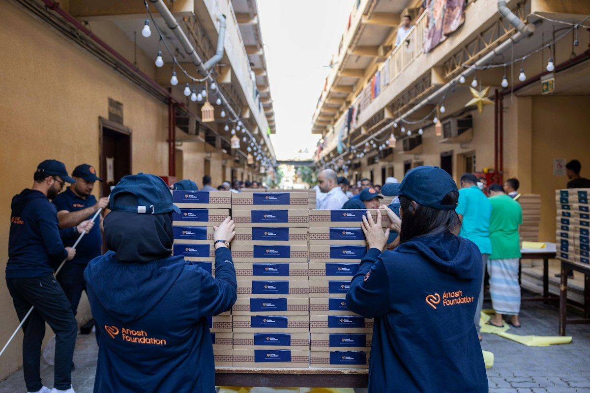

Get involved this spring
Riverside Community Project runs a food bank, a community garden and a Saturday repair café — all run by local volunteers. There's a way to help that fits almost any amount of time.

Ways to help
Volunteer your time
We always need help sorting food donations on Tuesday evenings, weeding the community garden on Saturday mornings, or greeting visitors at the repair café. No experience is needed — someone will show you the ropes on your first visit.
Donate
Tinned and dried food donations can be dropped at the front desk any weekday between 9am and 5pm. If you'd rather give money, every donation goes directly to buying fresh produce and repair parts — nothing is spent on overheads.
Spread the word
Not everyone who needs us knows we exist. Tell a neighbour, share our Saturday sessions with a community group you're part of, or put a poster up somewhere local. It's the easiest way to help and it costs nothing.
Frequently asked questions
Do I need to sign up before I turn up?
Not for a first visit — just come along at the times listed below. For repeat weekly slots, signing up helps us plan how much food to expect that week.
Is there a minimum time commitment?
No. Some volunteers come every week, others help out twice a year. Both matter to us.
Can under-18s volunteer?
Yes, from age 14, alongside a parent or guardian for food bank shifts. The garden sessions welcome younger children too.
Sign up to volunteer
Fields marked required (required) are required.